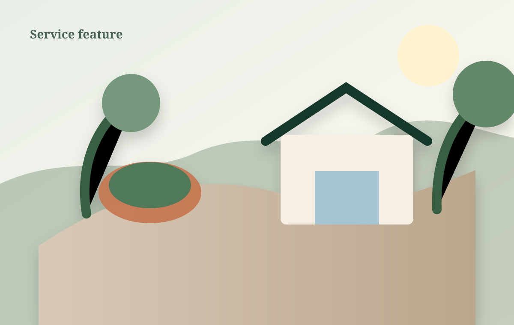

Landscape design & master planning
Site planning, planting design, grading concepts, material palettes, and phased master plans.
Learn moreThoughtful landscapes, patios, kitchens, lighting, and planting plans that feel rooted in your home—not dropped onto it.

Our designers balance architecture, drainage, sunlight, circulation, maintenance, and the way you actually want to use the space.
Site planning, planting design, grading concepts, material palettes, and phased master plans.
Learn moreNatural stone, pavers, seat walls, grade transitions, and durable outdoor rooms.
Learn moreCooking, gathering, shade, storage, and four-season destination spaces.
Learn more
Our designers and field leaders work from the same plans, quantities, grades, and finish standards—so the final space reflects the approved vision.
Every project moves through a deliberate sequence that protects design intent and budget clarity.
Walk the property, understand how you want to live outside, and identify opportunities.
Develop plans, material palettes, planting direction, and investment ranges.
Execute grading, hardscape, carpentry, lighting, and planting from coordinated documents.
Review care, adjust details, and monitor plant establishment after completion.

Layered entertaining terrace with natural stone, seat walls, and four-season planting.

Covered cooking, dining, storage, lighting, and utility coordination for year-round use.

Native-forward front landscape designed for shade, deer pressure, and seasonal depth.
★★★★★“They translated a dozen scattered ideas into one space that feels like it has always belonged to the house. The design process was calm, clear, and incredibly thoughtful.”
Sun, grade, architecture, views, and daily routines give us the foundation for a landscape that belongs.
Plan a design consultationStart with a design consultation and a clear path from idea to installation.